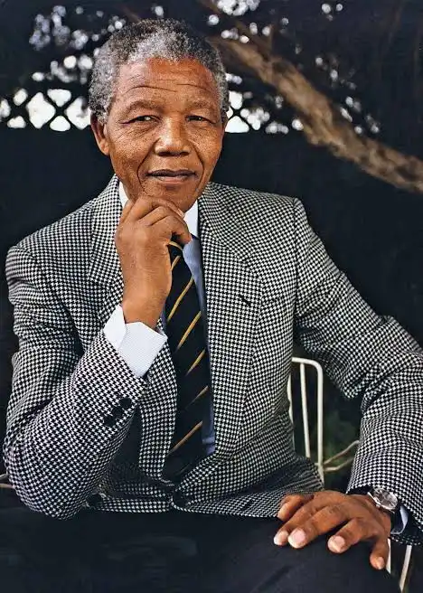

Nelson Mandela
president of South Africa

Nelson_Mandela, pictured alongside...
Here is a timeline for Nelson Mandela life
- 1918 - Born on 18 July in Mvezo, a small village in the Eastern Cape, South Africa.
- 1938 - Enrolls at the University of Fort Hare, the only residential university for Black Africans in South Africa at the time.
- 1944 - Joins the African National Congress (ANC) and co-founds its Youth League, injecting new militancy into the liberation movement.
- 1952 - Opens South Africa's first Black law firm with Oliver Tambo, offering legal counsel to those facing apartheid's unjust laws.
- 1956 - Charged with high treason alongside 155 other activists in the landmark Treason Trial; acquitted five years later in 1961.
- 1961 - Co-founds Umkhonto we Sizwe (MK), the armed wing of the ANC, after the Sharpeville massacre forces a shift in strategy.
- 1964 - Sentenced to life imprisonment at the Rivonia Trial; begins 27 years of incarceration, largely on Robben Island.
- 1980 - The global "Free Mandela" campaign gains momentum, making him the world's most famous political prisoner.
- 1990 - Released from Victor Verster Prison on 11 February, walking free after 27 years to a watching world.
- 1993 - Awarded the Nobel Peace Prize jointly with F.W. de Klerk for their work to dismantle apartheid peacefully.
- 1994 - Elected President of South Africa in the country's first fully democratic election, becoming its first Black head of state.
- 1999 - Steps down after a single term, setting a powerful precedent for democratic transfer of power in Africa.
- 2005 - Dies on 5 December at the age of 95 in Johannesburg, mourned across the globe as a towering symbol of justice and reconciliation.
"Mandela's extraordinary journey — from rural village to prison cell to the presidency — stands as one of history's most enduring testaments to the power of dignity, perseverance, and the refusal to abandon the dream of a just society."
Quote
"We will never, never sell our freedom for capital or technical aid. We stand for freedom at any cost."